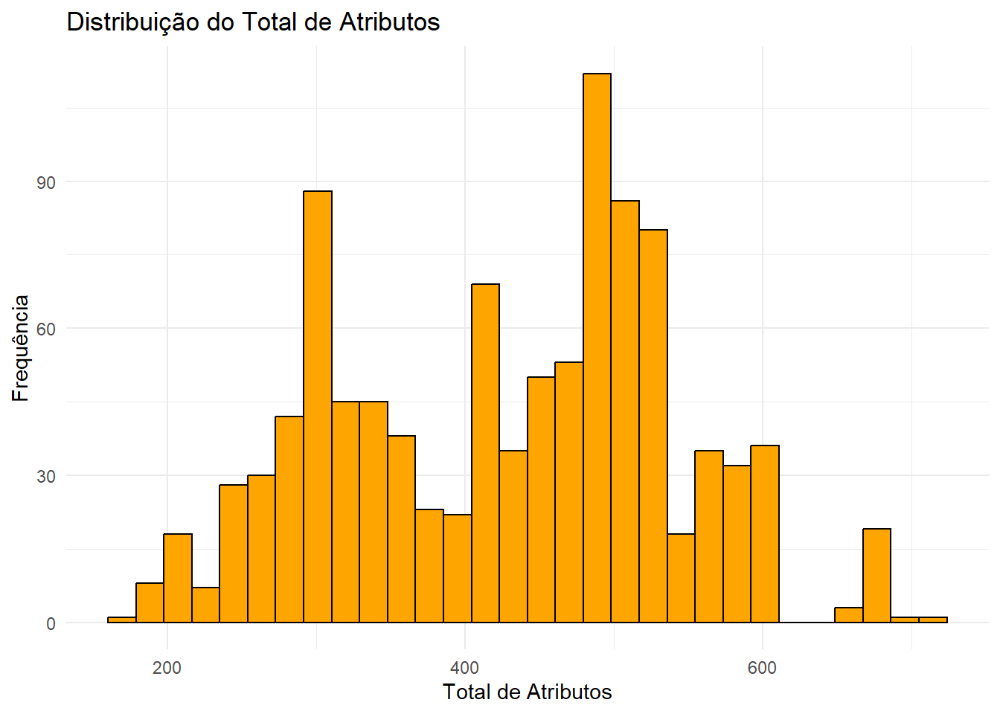
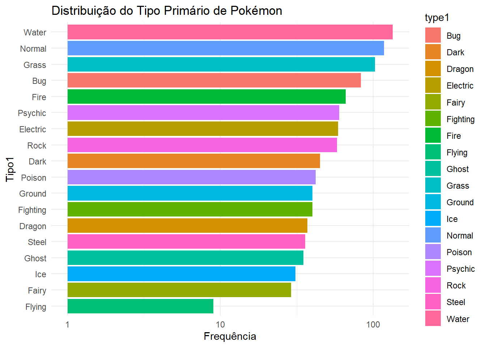
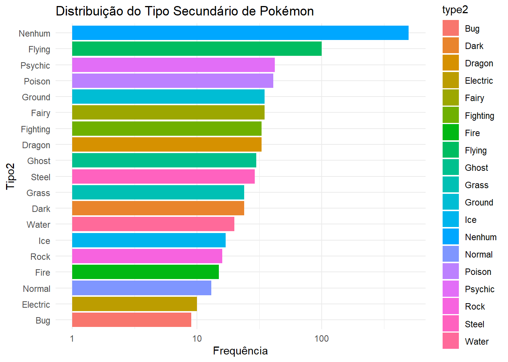
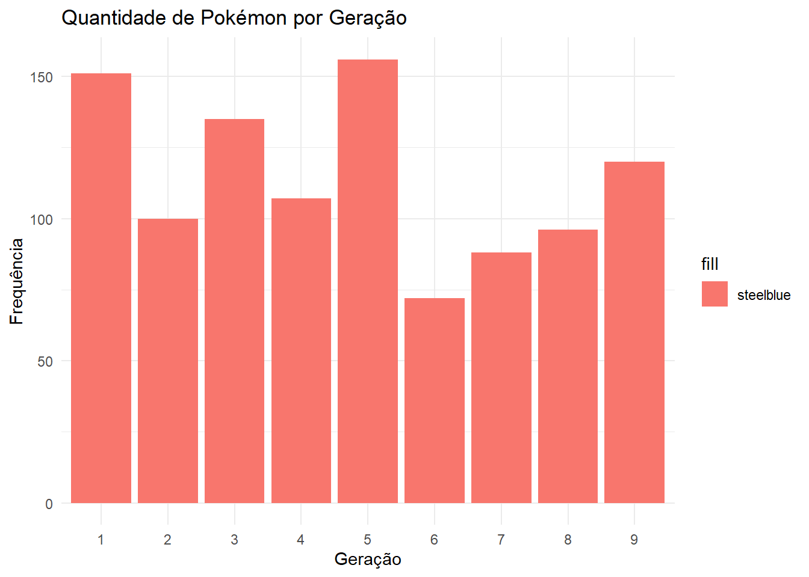
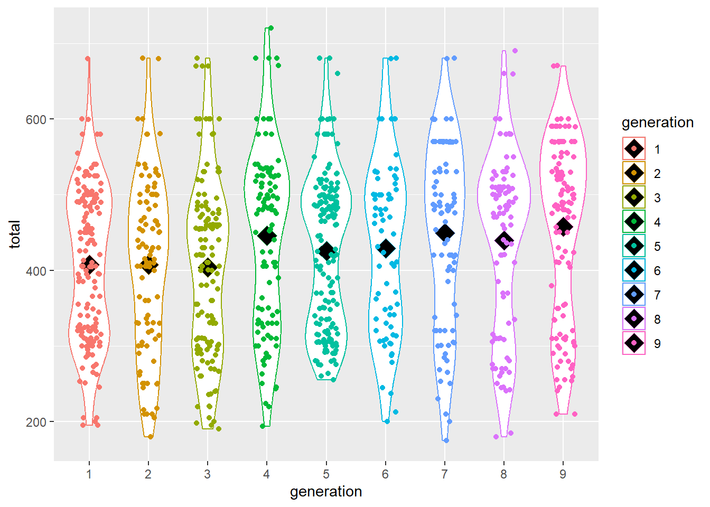
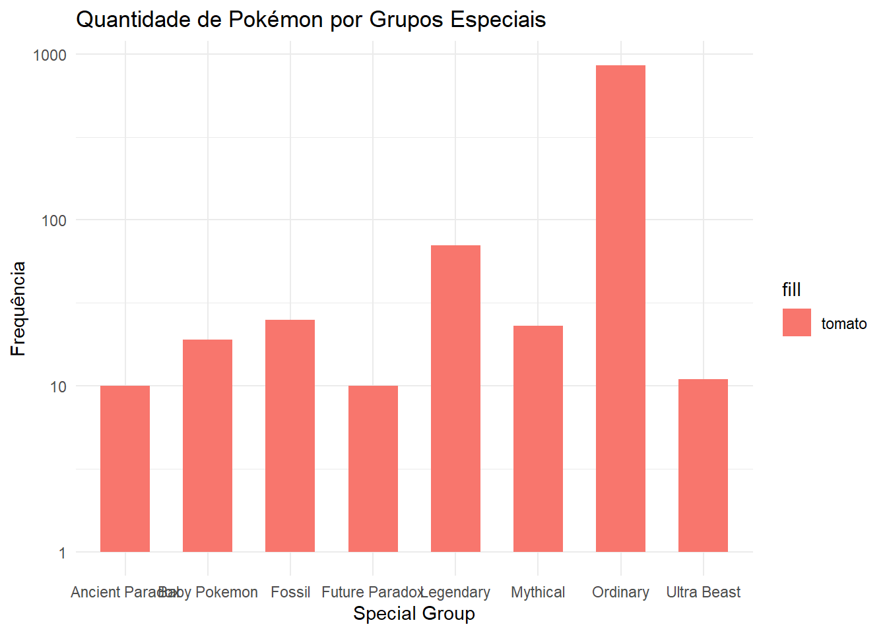
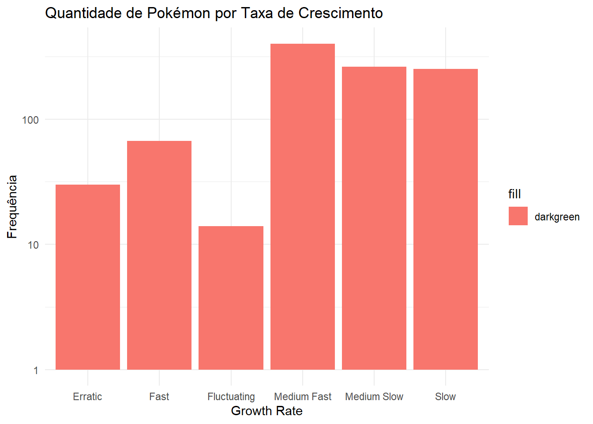
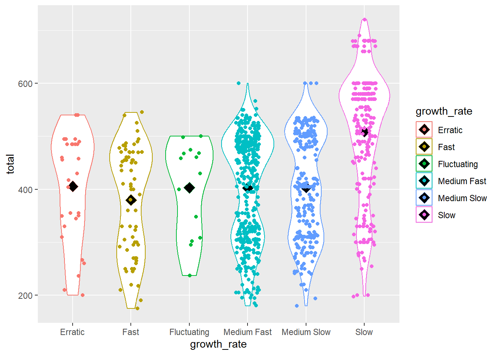

Relatório Pokemon
1. Introdução
Este relatório tem como objetivo apresentar uma visão geral dos dados do banco pokemon_data, retirados do Kaggle, explorando características interessantes dos Pokémon, como seus tipos, grupos especiais, estatísticas totais e geração.
Durante a análise, foram realizadas visualizações das distribuições dessas variáveis para identificar padrões e tendências, além da aplicação de um modelo de classificação para entender melhor as relações entre as características dos Pokémon.
O foco é entender melhor como essas características se relacionam e o que elas podem nos ensinar sobre os Pokémon de diferentes gerações.
2. Análise Exploratória
2.1 Carregamento dos Pacotes e Dados
A primeira etapa para realizar uma AED é garantir que todos os pacotes necessários estão instalados e carregados corretamente. Neste caso, usamos pacotes como tidyverse, C50, gmodels, knitr, dplyr, caret, car, stats e gtsummary que são essenciais para manipulação de dados e análise estatística.
Agora que as bibliotecas estão carregadas, carreguei o conjunto de dados pokemon para realizar a exploração inicial
2.2 Tratamento dos Dados
Para compreendermos melhor a base, é necessário observar os tipos de cada variável e sua disposição.
'data.frame': 1025 obs. of 29 variables:
$ dexnum : int 1 2 3 4 5 6 7 8 9 10 ...
$ name : chr "Bulbasaur" "Ivysaur" "Venusaur" "Charmander" ...
$ generation : int 1 1 1 1 1 1 1 1 1 1 ...
$ type1 : chr "Grass" "Grass" "Grass" "Fire" ...
$ type2 : chr "Poison" "Poison" "Poison" "" ...
$ species : chr "Seed Pokémon" "Seed Pokémon" "Seed Pokémon" "Lizard Pokémon" ...
$ height : chr "0.7" "1.0" "2.0" "0.6" ...
$ weight : chr "6.9" "13.0" "100.0" "8.5" ...
$ ability1 : chr "Overgrow" "Overgrow" "Overgrow" "Blaze" ...
$ ability2 : chr "Chlorophyll" "Chlorophyll" "Chlorophyll" "Solar Power" ...
$ hidden_ability : chr "" "" "" "" ...
$ hp : int 45 60 80 39 58 78 44 59 79 45 ...
$ attack : int 49 62 82 52 64 84 48 63 83 30 ...
$ defense : int 49 63 83 43 58 78 65 80 100 35 ...
$ sp_atk : int 65 80 100 60 80 109 50 65 85 20 ...
$ sp_def : int 65 80 100 50 65 85 64 80 105 20 ...
$ speed : int 45 60 80 65 80 100 43 58 78 45 ...
$ total : int 318 405 525 309 405 534 314 405 530 195 ...
$ ev_yield : chr "1 Sp. Atk" "1 Sp. Atk, 1 Sp. Def" "2 Sp. Atk, 1 Sp. Def" "1 Speed" ...
$ catch_rate : int 45 45 45 45 45 45 45 45 45 255 ...
$ base_friendship: chr "50" "50" "50" "50" ...
$ base_exp : chr "64" "142" "236" "62" ...
$ growth_rate : chr "Medium Slow" "Medium Slow" "Medium Slow" "Medium Slow" ...
$ egg_group1 : chr "Grass " "Grass " "Grass " "Dragon " ...
$ egg_group2 : chr "Monster" "Monster" "Monster" "Monster" ...
$ percent_male : chr "87.5" "87.5" "87.5" "87.5" ...
$ percent_female : chr "12.5" "12.5" "12.5" "12.5" ...
$ egg_cycles : chr "20" "20" "20" "20" ...
$ special_group : chr "Ordinary" "Ordinary" "Ordinary" "Ordinary" ...2.2.1 Valores Ausentes e Diversidades
No banco de dados de Pokémon, os valores ausentes foram representados por strings vazias (““) em vez de NA. Além disso, foram realizadas verificações para identificar e corrigir espaços extras e possíveis valores duplicados.
[1] "A quantidade de entradas duplicadas na base de dados é: 0"| Tipo2 | Proporção |
|---|---|
| 48.683 | |
| Bug | 0.878 |
| Dark | 2.341 |
| Dragon | 3.220 |
| Electric | 0.976 |
| Fairy | 3.415 |
| Fighting | 3.220 |
| Fire | 1.463 |
| Flying | 9.756 |
| Ghost | 2.927 |
| Grass | 2.341 |
| Ground | 3.415 |
| Ice | 1.659 |
| Normal | 1.268 |
| Poison | 4.000 |
| Psychic | 4.098 |
| Rock | 1.561 |
| Steel | 2.829 |
| Water | 1.951 |
Como algumas colunas continham uma quantidade considerável de valores ausentes, decidiu-se substituí-los por “Nenhum” por meio de uma função personalizada que verificava a presença da string (““) e realizava a substituição.
2.2.2 Alterando o Tipo das Tariáveis
Devido à substituição de strings, os valores de cada coluna foram convertidos para o formato character. Para corrigir isso, ajustamos os tipos das variáveis, convertendo algumas para o tipo fator e outras para double e integer, o que facilitou a análise.
'data.frame': 1025 obs. of 29 variables:
$ dexnum : chr "1" "2" "3" "4" ...
$ name : chr "Bulbasaur" "Ivysaur" "Venusaur" "Charmander" ...
$ generation : Factor w/ 9 levels "1","2","3","4",..: 1 1 1 1 1 1 1 1 1 1 ...
$ type1 : chr "Grass" "Grass" "Grass" "Fire" ...
$ type2 : chr "Poison" "Poison" "Poison" "Nenhum" ...
$ species : chr "Seed Pokémon" "Seed Pokémon" "Seed Pokémon" "Lizard Pokémon" ...
$ height : num 0.7 1 2 0.6 1.1 1.7 0.5 1 1.6 0.3 ...
$ weight : num 6.9 13 100 8.5 19 90.5 9 22.5 85.5 2.9 ...
$ ability1 : chr "Overgrow" "Overgrow" "Overgrow" "Blaze" ...
$ ability2 : chr "Chlorophyll" "Chlorophyll" "Chlorophyll" "Solar Power" ...
$ hidden_ability : chr "Nenhum" "Nenhum" "Nenhum" "Nenhum" ...
$ hp : int 45 60 80 39 58 78 44 59 79 45 ...
$ attack : int 49 62 82 52 64 84 48 63 83 30 ...
$ defense : int 49 63 83 43 58 78 65 80 100 35 ...
$ sp_atk : int 65 80 100 60 80 109 50 65 85 20 ...
$ sp_def : int 65 80 100 50 65 85 64 80 105 20 ...
$ speed : int 45 60 80 65 80 100 43 58 78 45 ...
$ total : int 318 405 525 309 405 534 314 405 530 195 ...
$ ev_yield : chr "1 Sp. Atk" "1 Sp. Atk, 1 Sp. Def" "2 Sp. Atk, 1 Sp. Def" "1 Speed" ...
$ catch_rate : int 45 45 45 45 45 45 45 45 45 255 ...
$ base_friendship: int 50 50 50 50 50 50 50 50 50 50 ...
$ base_exp : int 64 142 236 62 142 267 63 142 239 39 ...
$ growth_rate : Factor w/ 6 levels "Erratic","Fast",..: 5 5 5 5 5 5 5 5 5 4 ...
$ egg_group1 : Factor w/ 15 levels "Amorphous","Bug",..: 8 8 8 4 4 4 11 11 11 2 ...
$ egg_group2 : Factor w/ 12 levels "Dragon","Fairy",..: 8 8 8 8 8 8 10 10 10 9 ...
$ percent_male : chr "87.5" "87.5" "87.5" "87.5" ...
$ percent_female : chr "12.5" "12.5" "12.5" "12.5" ...
$ egg_cycles : Factor w/ 12 levels "—","10","120",..: 5 5 5 5 5 5 5 5 5 4 ...
$ special_group : Factor w/ 8 levels "Ancient Paradox",..: 7 7 7 7 7 7 7 7 7 7 ...2.3 Descrição dos Dados
A tabela apresenta a estatística descritiva das variáveis contínuas e categóricas do banco de dados Pokémon, com N = 1,025 observações. São mostradas as médias (Mean) e desvios padrão (SD) para as variáveis contínuas e a distribuição de frequências para a variável categórica base_friendship.
| Variável | N = 1,0251 |
|---|---|
| height | 1.2 (1.2) |
| weight | 67.0 (121.3) |
| hp | 70.2 (26.6) |
| attack | 77.5 (29.8) |
| defense | 72.5 (29.3) |
| sp_atk | 70.1 (29.7) |
| sp_def | 70.2 (26.6) |
| speed | 67.2 (28.7) |
| total | 427.7 (112.8) |
| catch_rate | 94.9 (76.1) |
| base_friendship | |
| 0 | 69 (6.8%) |
| 20 | 3 (0.3%) |
| 35 | 73 (7.2%) |
| 50 | 830 (82%) |
| 70 | 2 (0.2%) |
| 90 | 5 (0.5%) |
| 100 | 15 (1.5%) |
| 140 | 11 (1.1%) |
| Unknown | 17 |
| base_exp | 151.1 (80.6) |
| Unknown | 17 |
| 1 Mean (SD); n (%) | |
O teste de Kolmogorov-Smirnov (KS) foi aplicado às variáveis contínuas do banco de dados Pokémon para verificar a normalidade dos dados. O valor de p do teste indica se os dados seguem uma distribuição normal: \(p-valor < 0,05\) sugere que a variável não é normalmente distribuída, enquanto \(p >= 0,05\) sugere normalidade.
| Variável | Valor.de.p | Interpretação |
|---|---|---|
| Height | 0.0000000 | Não segue uma distribuição normal (p < 0.05) |
| Weight | 0.0000000 | Não segue uma distribuição normal (p < 0.05) |
| HP | 0.0000000 | Não segue uma distribuição normal (p < 0.05) |
| Attack | 0.0003139 | Não segue uma distribuição normal (p < 0.05) |
| Defense | 0.0000002 | Não segue uma distribuição normal (p < 0.05) |
| Special Attack | 0.0000000 | Não segue uma distribuição normal (p < 0.05) |
| Special Defense | 0.0000195 | Não segue uma distribuição normal (p < 0.05) |
| Speed | 0.0001689 | Não segue uma distribuição normal (p < 0.05) |
| Total | 0.0000000 | Não segue uma distribuição normal (p < 0.05) |
| Catch Rate | 0.0000000 | Não segue uma distribuição normal (p < 0.05) |
| Base Friendship | 0.0000000 | Não segue uma distribuição normal (p < 0.05) |
| Base Exp | 0.0000000 | Não segue uma distribuição normal (p < 0.05) |
Conclusões:
Todas as variáveis testadas apresentam valores de p muito baixos (todos menores que 0,05), indicando que nenhuma delas segue uma distribuição normal.
As variáveis do banco de dados Pokémon, como height, weight, hp, attack, defense, special attack, special defense, speed, total, catch rate, base friendship, e base exp não são normalmente distribuídas, de acordo com os resultados do teste de Kolmogorov-Smirnov.
Afim de avaliar a variável Total, foi elaborado um histograma para visualizar seu comportamento:

O objetivo seguinte foi comparar o peso e a altura entre três variáveis: geração, taxa de crescimento e grupos especiais. Para isso, foi aplicado o teste de Levene (teste de homogeneidade de variâncias), a fim de verificar se as variâncias dos grupos de cada variável eram homogêneas, permitindo comparações válidas de peso e altura entre eles.
Como pode ser observado nas tabelas, não é possível realizar comparações entre os grupos devido à falta de homogeneidade de variâncias.
Variável Valor.de.p Conclusão
1 Height 0.0092922822 Diferença significativa
2 Weight 0.0001124656 Diferença significativa Variável Valor.de.p Conclusão
1 Height 2.118328e-09 Diferença significativa
2 Weight 3.994896e-35 Diferença significativa Variável Valor.de.p Conclusão
1 Height 3.156801e-09 Diferença significativa
2 Weight 3.702073e-21 Diferença significativa2.3.1 Comparação de Frequência Entre os Tipos
Nos gráficos de barras abaixo, é possível observar que, no tipo primário de Pokémon, os tipos com maior frequência são: Água (13%), Normal (11,5%), Grama (10%), Inseto (8%) e Fogo (6,5%). Por outro lado, os tipos com menor frequência são: Voador (1%), Fantasma (3,5%), Gelo (3%), Fada (3%) e Ferro (3,5%).
Já no tipo secundário, a categoria ‘Nenhum’ é predominante, com 50% de frequência. Ao comparar com o tipo primário, nota-se uma inversão: os tipos Voador (10%) e Fada (3,5%) têm maior frequência que Inseto (1%), Normal (1%), Fogo (1,5%) e Água (2%).


2.3.2 Fortes e Fracos
Arceus |
Eternatus |
|---|---|
Mewtwo |
Lugia |
Ho-Oh |
Os 5 Pokémon mais fortes, com base na coluna total, têm as seguintes características:
Arceus é o mais forte com um total de 720 pontos e é do tipo Normal.
Eternatus, Mewtwo, Lugia e Ho-oh têm 680 pontos, com diferentes combinações de tipos:
Eternatus (Poison e Dragon),
Mewtwo (Psychic),
Lugia (Psychic e Flying),
Ho-oh (Fire e Flying).
Além disso, todos esses Pokémon têm uma taxa de crescimento lenta (Slow), o que significa que eles evoluem de forma mais gradual.
Wishiwashi |
Sunkern |
|---|---|
Blipbug |
Snom |
Azurill |
Os 5 Pokémon mais fracos possuem totais de pontos muito baixos, variando entre 175 e 190 pontos.
Eles possuem tipos primários variados como Water, Grass, Bug, Ice, e Normal, e apenas Azurill e Snom têm tipos secundários (Fairy e Bug, respectivamente).
A taxa de crescimento varia: Wishiwashi e Azurill têm crescimento rápido, enquanto Sunkern tem crescimento médio lento, e Blipbug e Snom têm crescimento médio rápido.
Esses Pokémon são mais fracos em termos de pontos totais, mas suas taxas de crescimento podem ser um ponto positivo, permitindo que evoluam de forma relativamente rápida.
2.3.3 Captura dos pokemons
Articuno |
Zapdos |
|---|---|
Moltres |
Mewtwo |
Raikou |
Todos esses Pokémon têm uma taxa de captura igual a 3, o que significa que são extremamente difíceis de capturar. Isso é comum entre Pokémon lendários e míticos, que geralmente possuem uma taxa de captura muito baixa.
Em relação aos tipos, esses Pokémon possuem tipos primários como Ice, Electric, Fire, Psychic e Electric. Apenas Mewtwo e Raikou não têm um tipo secundário.
A taxa de crescimento de todos esses Pokémon é lenta, o que indica que eles são Pokémon raros e poderosos que evoluem ou são obtidos de forma mais difícil ao longo do tempo.
Esses Pokémon são conhecidos por sua raridade e dificuldade de captura, refletindo seu status de Pokémon lendário e poderoso no universo Pokémon.
Caterpie |
Weedle |
|---|---|
Pidgey |
Rattata |
Spearow |
Os cinco Pokémon mais fáceis de capturar possuem uma taxa de captura de 255, o que indica que são extremamente fáceis de capturar no jogo. Isso é comum entre Pokémon iniciais ou comuns, que têm uma taxa de captura muito alta.
Quanto aos tipos, todos esses Pokémon têm tipos primários como Bug, Normal e Flying, com Weedle sendo o único com um tipo secundário, Poison.
A taxa de crescimento desses Pokémon é Medium Fast para a maioria deles, exceto Pidgey, que possui Medium Slow. Isso sugere que eles são Pokémon de fácil acesso, com evolução relativamente rápida ou moderada.
Esses Pokémon são conhecidos por sua facilidade de captura, sendo populares entre jogadores que estão no início da jornada ou buscando Pokémon de fácil obtenção.
2.3.4 Analisando Geração, Grupos Especiais e Taxa de Crescimento
– Distribuição de Pokémon por Geração: A análise da quantidade de Pokémon por geração, representada pelo gráfico de barras, revela que a primeira, terceira e quinta gerações possuem a maior frequência de Pokémon. Essa distribuição destaca como essas gerações tiveram um número mais expressivo de criaturas ao longo das edições.

Aplicação do Teste de Levene:
– Comparação de Atributos por Geração: Ao observarmos o gráfico de violino, que ilustra a distribuição dos atributos totais por geração, é possível notar que as gerações sexta, sétima e oitava possuem médias de atributos semelhantes às das gerações anteriores. Isso sugere um equilíbrio no poder geral dos Pokémon, independentemente da geração, indicando que os Pokémon mais recentes são tão fortes quanto os das gerações passadas.

– Distribuição dos Grupos Especiais de Pokémon: A análise da distribuição dos grupos especiais de Pokémon, apresentada no gráfico de barras, mostra que a categoria Ordinary é a mais frequente, destacando-se entre os demais grupos. No entanto, essa alta frequência não implica em maior força, já que a categoria Ordinary inclui muitos Pokémon com atributos totais mais baixos.

Aplicação do Teste de Levene:
Com base no resultado do p-valor, que foi inferior a 0,05, podemos concluir que não há homogeneidade de variância. Portanto, não foi possível realizar comparações em relação à variável total de atributos.
- Distribuição das Taxas de Crescimento de Pokémon: O gráfico de barras que mostra a distribuição das taxas de crescimento dos Pokémon revela que as categorias Medium Fast, Medium Slow e Slow são as mais frequentes. Essas categorias representam a maioria dos Pokémon e refletem diferentes ritmos de evolução.

Aplicação do Teste de Levene:
- Comparação de Atributos por Taxa de Crescimento: Ao analisar o gráfico de violino, que apresenta a distribuição dos atributos totais por taxa de crescimento, observa-se que as categorias Medium Fast e Medium Slow geralmente possuem Pokémon com valores totais de atributos abaixo da média. Esses Pokémon frequentemente possuem a capacidade de evoluir, o que compensa seus valores iniciais mais baixos.
Por outro lado, a categoria Slow é um grupo misto: inclui tanto Pokémon mais fracos, com baixos valores de atributos e dificuldade para evoluir, quanto Pokémon extremamente fortes, que não precisam mais evoluir. Isso resulta em uma distribuição mais dispersa, com valores totais de atributos variados.

Exemplos:
Ralts |
Kirlia |
Magikarp |
Gyarados |
Cosmog |
Cosmoem |
3. Modelo de Classificação
3.1 Pré - Tratamento
- Exclusão de colunas irrelevantes: Inicialmente, excluí as colunas que dificultavam a identificação de padrões no modelo, devido à alta quantidade de valores. Essas colunas foram:
namedexnumpercent_malepercent_femalespeciesability1ability2hidden_abilityev_yield
- Transformação da variável resposta em dicotômica: Em seguida, transformei a variável resposta (
special_group) em uma variável dicotômica. O primeiro valor foi recodificado como “Especiais”, englobando as categorias:- “Future Paradox”
- “Ancient Paradox”
- “Ultra Beast”
- “Baby Pokemon”
- “Fossil”
- “Legendary”
- “Mythical”
O segundo valor foi mantido como “Ordinary” para os valores já classificados como “Ordinary”.
- Omissão de linhas nulas: Por fim, omiti as linhas com valores nulos, totalizando 34 linhas. Essas linhas estavam nas variáveis
height(17 linhas) ewidth(17 linhas).
Foi definida uma semente (123) para evitar a criação de amostras aleatórias. Em seguida, as bases de dados de treino e teste foram criadas, sendo que a base de treino corresponde a 90% da base original e a base de teste a 10%.
[1] "Dimensão da base de dados de treino: 906 , 20"[1] "Dimensão da base de dados de teste: 102 , 20"3.2 Aplicando o Modelo
Após configurar o modelo C5.0 para a base de dados de treino, utilizando a coluna special_group como variável resposta e as demais como previsoras, aplicamos o modelo_pokemon na base de teste, obtendo a seguinte classificação:
[1] Ordinary Ordinary Ordinary Ordinary Ordinary Ordinary Ordinary
[8] Ordinary Ordinary Ordinary Especiais Ordinary Ordinary Ordinary
[15] Ordinary Ordinary Ordinary Ordinary Ordinary Ordinary Especiais
[22] Especiais Ordinary Ordinary Ordinary Ordinary Ordinary Especiais
[29] Ordinary Ordinary Ordinary Ordinary Ordinary Ordinary Ordinary
[36] Ordinary Ordinary Ordinary Ordinary Ordinary Especiais Ordinary
[43] Especiais Ordinary Ordinary Ordinary Ordinary Ordinary Ordinary
[50] Ordinary Ordinary Ordinary Ordinary Ordinary Ordinary Ordinary
[57] Ordinary Ordinary Ordinary Ordinary Especiais Ordinary Ordinary
[64] Ordinary Ordinary Ordinary Ordinary Especiais Ordinary Ordinary
[71] Ordinary Ordinary Ordinary Ordinary Ordinary Ordinary Ordinary
[78] Ordinary Ordinary Ordinary Ordinary Ordinary Ordinary Ordinary
[85] Ordinary Ordinary Especiais Ordinary Ordinary Ordinary Ordinary
[92] Especiais Ordinary Especiais Ordinary Ordinary Ordinary Ordinary
[99] Ordinary Ordinary Especiais Ordinary
Levels: Especiais OrdinaryRealizou-se a extração dos atributos utilizados para a criação da árvore. Como pode ser observado no gráfico de barras a seguir, as únicas variáveis selecionadas foram egg_group1, egg_cycles e catch_rate, classificadas em ordem de importância com 100%, 85,54% e 2,76%, respectivamente.

3.3 Avaliação
Confusion Matrix and Statistics
Reference
Prediction Especiais Ordinary
Especiais 11 1
Ordinary 1 89
Accuracy : 0.9804
95% CI : (0.931, 0.9976)
No Information Rate : 0.8824
P-Value [Acc > NIR] : 0.0003031
Kappa : 0.9056
Mcnemar's Test P-Value : 1.0000000
Sensitivity : 0.9167
Specificity : 0.9889
Pos Pred Value : 0.9167
Neg Pred Value : 0.9889
Prevalence : 0.1176
Detection Rate : 0.1078
Detection Prevalence : 0.1176
Balanced Accuracy : 0.9528
'Positive' Class : Especiais
Ao comparar a previsão do modelo com a base de dados de teste, obtivemos uma acurácia de 98%, o que é significativamente alto, com um erro relativamente pequeno
Para uma melhor visualização da tabela comparativa entre as previsões e os valores reais:
Cell Contents
|-------------------------|
| N |
| N / Table Total |
|-------------------------|
Total Observations in Table: 102
| Grupos Especiais predita
Grupos Especiais real | Especiais | Ordinary | Row Total |
----------------------|-----------|-----------|-----------|
Especiais | 11 | 1 | 12 |
| 0.108 | 0.010 | |
----------------------|-----------|-----------|-----------|
Ordinary | 1 | 89 | 90 |
| 0.010 | 0.873 | |
----------------------|-----------|-----------|-----------|
Column Total | 12 | 90 | 102 |
----------------------|-----------|-----------|-----------|
4. Conclusão
O relatório apresentou uma análise detalhada dos dados do banco pokemon_data, explorando características como tipos, grupos especiais, estatísticas e gerações dos Pokémon. A análise revelou padrões interessantes, como a predominância dos tipos Água e Normal no tipo primário, enquanto o tipo secundário foi majoritariamente ausente (“Nenhum”). Pokémon lendários, como Arceus e Mewtwo, destacaram-se por seus altos valores de atributos totais e taxas de crescimento lentas, enquanto Pokémon comuns, como Caterpie e Pidgey, foram identificados como os mais fáceis de capturar.
A distribuição por geração mostrou que as primeiras, terceiras e quintas gerações possuem a maior quantidade de Pokémon, com equilíbrio nos atributos totais entre gerações mais antigas e recentes. Além disso, a categoria “Ordinary” foi a mais frequente entre os grupos especiais, embora não necessariamente a mais forte. O modelo de classificação aplicado alcançou alta acurácia (98%), utilizando variáveis como egg_group1, egg_cycles e catch_rate para prever grupos especiais.
Em resumo, a análise forneceu insights valiosos sobre as características dos Pokémon, destacando a importância de entender sua distribuição e atributos para estratégias competitivas. A aplicação de técnicas de ciência de dados demonstrou como a exploração contínua de dados pode auxiliar treinadores a adaptar suas táticas em um metagame em constante evolução.
5. Anexos
5.1 Códigos da Análise Exploratória
pacotes = c("tidyverse","C50","gmodels","dplyr","knitr","gtsummary","caret","car","stats")
# Verifica se cada pacote está instalado e instala caso contrário
pacotes_nao_instalados <- pacotes[!(pacotes %in% installed.packages()[, "Package"])]
if (length(pacotes_nao_instalados) > 0) {
install.packages(pacotes_nao_instalados)
}
lapply(pacotes, library, character.only = TRUE)# Carrega a base de dados em formato csv
pokemon = read.csv2("~/R/PROJETOS R/Análise pokemon/pokemon_data.csv", header = T, sep = ",", fileEncoding = "UTF-8")
# Verifica as 5 primeiras linhas do data frame
head(pokemon, 5)# Verificando o tipo de cada variável
str(pokemon)# Verificando se há entradas duplicadas
print(paste("A quantidade de entradas duplicadas na base de dados é:", sum(duplicated(pokemon))))
# Retirando espaços em branco com trimws
pokemon = apply(pokemon,2,trimws)
pokemon = as.data.frame(pokemon)
# Verificando a presença do valor "vazio"
tabela = prop.table(table(pokemon$type2))*100
tabela_df <- as.data.frame(tabela)
# Exibindo como tabela formatada
kable(tabela_df, col.names = c("Tipo2", "Proporção"), digits = 3)# Criando uma função para substituição do valor "vazio"
subst_vazios = function(col){
ifelse(col == "", "Nenhum", col)
}
# Aplicando a função de substituição
pokemon = apply(pokemon, 2, subst_vazios)
pokemon = as.data.frame(pokemon)
# Verificando a presença do valor "vazio" novamente
tabela = prop.table(table(pokemon$type2))*100
tabela_df <- as.data.frame(tabela)
# Exibindo como tabela formatada
kable(tabela_df, col.names = c("Tipo2", "Proporção"), digits = 3)attach(pokemon)
# Alterando o tipo das colunas
# Fator
pokemon$generation = as.factor(generation)
pokemon$special_group = as.factor(special_group)
pokemon$egg_cycles = as.factor(egg_cycles)
pokemon$egg_group1 = as.factor(egg_group1)
pokemon$egg_group2 = as.factor(egg_group2)
pokemon$growth_rate = as.factor(growth_rate)
# Inteiros e Reais
pokemon$height = as.double(height)
pokemon$weight = as.double(weight)
pokemon$hp = as.integer(hp)
pokemon$attack = as.integer(attack)
pokemon$defense = as.integer(defense)
pokemon$speed = as.integer(speed)
pokemon$sp_atk = as.integer(sp_atk)
pokemon$sp_def = as.integer(sp_def)
pokemon$total = as.integer(total)
pokemon$base_exp = as.integer(base_exp)
pokemon$catch_rate = as.integer(catch_rate)
pokemon$base_friendship = as.integer(base_friendship)
str(pokemon)# Tabela resumo das variáveis contínuas
pokemon |>
select(where(is.numeric)) |> # Seleciona apenas as variáveis numéricas
tbl_summary(
statistic = list(all_continuous() ~ "{mean} ({sd})"),
digits = list(all_continuous() ~ c(1, 1))
) |>
modify_header(label = "**Variável**") |>
modify_caption("Estatística descritiva para variáveis contínuas") |>
bold_labels()# Função para aplicar o ks.test a cada coluna com a distribuição normal
ks_test_results = pokemon %>%
select(where(is.numeric)) %>% # Seleciona apenas variáveis numéricas
summarise(across(everything(),
~ ks.test(.x, "pnorm", mean = mean(.x), sd = sd(.x))$p.value))
# Criar uma tabela com os resultados do teste de Kolmogorov-Smirnov
resultados_ks <- data.frame(
Variável = c("Height", "Weight", "HP", "Attack", "Defense",
"Special Attack", "Special Defense", "Speed", "Total",
"Catch Rate", "Base Friendship", "Base Exp"),
`Valor de p` = c(7.85e-37, 7.07e-75, 3.60e-08, 0.0003139477, 2.37e-07,
1.16e-09, 1.95e-05, 0.0001688998, 1.88e-08, 1.11e-38,
3.97e-151, 3.54e-19),
Interpretação = rep("Não segue uma distribuição normal (p < 0.05)", 12)
)
# Gerar a tabela com kable
kable(resultados_ks, caption = "Resultados do Teste de Kolmogorov-Smirnov para Normalidade")# Histograma da variável 'Total'
ggplot(pokemon, aes(x = total)) +
geom_histogram(bins = 30, fill = "orange", color = "black") +
labs(title = "Distribuição do Total de Atributos", x = "Total de Atributos", y = "Frequência") +
theme_minimal()# Supondo que o código já tenha sido executado:
height_test <- leveneTest(pokemon$height ~ pokemon$generation)
weight_test <- leveneTest(pokemon$weight ~ pokemon$generation)
# Criando uma tabela com os resultados
resultados <- data.frame(
"Variável" = c("Height", "Weight"),
"Valor de p" = c(height_test$`Pr(>F)`[1], weight_test$`Pr(>F)`[1]),
"Conclusão" = c(
ifelse(height_test$`Pr(>F)`[1] < 0.05, "Diferença significativa", "Diferença não significativa"),
ifelse(weight_test$`Pr(>F)`[1] < 0.05, "Diferença significativa", "Diferença não significativa")
)
)
# Exibindo a tabela
print(resultados)# Supondo que o código já tenha sido executado:
height_test <- leveneTest(pokemon$height ~ pokemon$special_group)
weight_test <- leveneTest(pokemon$weight ~ pokemon$special_group)
# Criando uma tabela com os resultados
resultados <- data.frame(
"Variável" = c("Height", "Weight"),
"Valor de p" = c(height_test$`Pr(>F)`[1], weight_test$`Pr(>F)`[1]),
"Conclusão" = c(
ifelse(height_test$`Pr(>F)`[1] < 0.05, "Diferença significativa", "Diferença não significativa"),
ifelse(weight_test$`Pr(>F)`[1] < 0.05, "Diferença significativa", "Diferença não significativa")
)
)
# Exibindo a tabela
print(resultados)# Supondo que o código já tenha sido executado:
height_test <- leveneTest(pokemon$height ~ pokemon$growth_rate)
weight_test <- leveneTest(pokemon$weight ~ pokemon$growth_rate)
# Criando uma tabela com os resultados
resultados <- data.frame(
"Variável" = c("Height", "Weight"),
"Valor de p" = c(height_test$`Pr(>F)`[1], weight_test$`Pr(>F)`[1]),
"Conclusão" = c(
ifelse(height_test$`Pr(>F)`[1] < 0.05, "Diferença significativa", "Diferença não significativa"),
ifelse(weight_test$`Pr(>F)`[1] < 0.05, "Diferença significativa", "Diferença não significativa")
)
)
# Exibindo a tabela
print(resultados)# Distribuição do tipo1
pokemon %>%
count(type1) %>%
ggplot(aes(x = reorder(type1, n), y = n, fill = type1)) +
geom_bar(stat = "identity") + scale_y_log10() +
coord_flip() +
labs(title = "Distribuição do Tipo Primário de Pokémon", x = "Tipo1", y = "Frequência") +
theme_minimal()# Distribuição do tipo2
pokemon %>%
count(type2) %>%
ggplot(aes(x = reorder(type2, n), y = n, fill = type2)) +
geom_bar(stat = "identity") + scale_y_log10() +
coord_flip() +
labs(title = "Distribuição do Tipo Secundário de Pokémon", x = "Tipo2", y = "Frequência") +
theme_minimal()# 5 Pokemons mais fortes (baseado na coluna total)
pokemon |>
select(name,total,species,type1,type2,growth_rate) |>
filter(total>=mean(total)) |>
arrange(desc(total)) |>
head(5)# 5 Pokemons mais fracos (baseado na coluna total)
pokemon |>
select(name,total,species,type1,type2, growth_rate) |>
filter(total<mean(total)) |>
arrange((total)) |>
head(5)# 5 pokemons mais difíceis de capturar
pokemon |>
select(name,catch_rate,species,type1,type2, growth_rate) |>
filter(catch_rate<mean(catch_rate)) |>
arrange(catch_rate) |>
head(5)# 5 pokemons mais fáceis de capturar
pokemon |>
select(name,catch_rate,species,type1,type2, growth_rate) |>
filter(catch_rate>=mean(catch_rate)) |>
arrange(desc(catch_rate)) |>
head(5)# Distribuição das gerações
ggplot(data = pokemon) +
geom_bar(aes(x = generation, fill = "steelblue")) +
labs(title = "Quantidade de Pokémon por Geração", x = "Geração", y = "Frequência") +
theme_minimal()leveneTest(pokemon$total ~ pokemon$generation)# Verificar melhor geração baseado no total
ggplot(pokemon, aes(x = generation, y = total, color=generation)) +
geom_violin() + stat_summary(fun.y=mean, geom="point", shape=23, size=5, fill = "black") +
geom_jitter(shape=16, position=position_jitter(0.2))# Distribuição dos grupos especiais
ggplot(data = pokemon) +
geom_bar(aes(x = special_group, fill = "tomato"),width = 0.6) + scale_y_log10() +
labs(title = "Quantidade de Pokémon por Grupos Especiais", x = "Special Group", y = "Frequência") +
theme_minimal()leveneTest(pokemon$total ~ pokemon$special_group)# Distribuição da taxa de crescimento
ggplot(data = pokemon) +
geom_bar(aes(x = growth_rate, fill = "darkgreen")) + scale_y_log10() +
labs(title = "Quantidade de Pokémon por Taxa de Crescimento", x = "Growth Rate", y = "Frequência") +
theme_minimal()leveneTest(pokemon$total ~ pokemon$growth_rate)# Verificar melhor taxa de crescimento baseado no total
ggplot(pokemon, aes(x = growth_rate, y = total, color=growth_rate)) +
geom_violin() + stat_summary(fun.y=mean, geom="point", shape=23, size=4, fill = "black") +
geom_jitter(shape=16, position=position_jitter(0.2))
# Exemplos de pokemon que tem uma taxa de crescimento lenta e possuem total baixopokemon |>
select(name, total, growth_rate, type1, type2) |>
filter(growth_rate == "Slow") |>
arrange((total)) |>
head(3)5.2 Códigos do Modelo
# Excluindo colunas inutilizáveis para o modelo
pokemon$name = NULL
pokemon$dexnum = NULL
pokemon$percent_female = NULL
pokemon$percent_male = NULL
pokemon$species = NULL
pokemon$ability1 = NULL
pokemon$ability2 = NULL
pokemon$hidden_ability = NULL
pokemon$ev_yield = NULL# Mudando special group para dicotomica
pokemon = pokemon |>
mutate(
special_group = fct_recode(special_group,
"Especiais" = "Future Paradox",
"Especiais" = "Ancient Paradox",
"Especiais" = "Ultra Beast",
"Especiais" = "Baby Pokemon",
"Especiais" = "Fossil",
"Especiais" = "Legendary",
"Especiais" = "Mythical",
"Ordinary" = "Ordinary"))# Omitindo linhas que possuem valores nulos (34 linhas)
pokemon = na.omit(pokemon)set.seed(123)
amostra_teste = sample(1008,102)
pokemon_treino = pokemon[-amostra_teste,]
pokemon_teste = pokemon[amostra_teste,]
print(paste("Dimensão da base de dados de treino:",dim(pokemon_treino)[1],",",dim(pokemon_treino)[2]))
print(paste("Dimensão da base de dados de teste:",dim(pokemon_teste)[1],",",dim(pokemon_teste)[2]))modelo_pokemon = C5.0(x = pokemon_treino[-c(20)], y = pokemon_treino$special_group)
# Vamos ver como o modelo classifica os dados de teste
pokemon_pred = predict(modelo_pokemon, pokemon_teste)
pokemon_pred# Capturando a saída do summary(modelo_credito)
saida_summary <- capture.output(summary(modelo_pokemon))
# Extraindo a seção "Attribute usage"
attribute_usage_lines <- saida_summary[str_detect(saida_summary, "Attribute usage") + 1:length(saida_summary)]
attribute_usage_lines <- attribute_usage_lines[str_detect(attribute_usage_lines, "^\\s+\\d+\\.\\d+%")]
# Extraindo os nomes dos atributos e suas porcentagens de uso
attribute_usage <- str_match_all(attribute_usage_lines, "\\s+(\\d+\\.\\d+)%\\s+(\\w+)")
attribute_usage <- do.call(rbind, attribute_usage)
attribute_usage <- as.data.frame(attribute_usage)
colnames(attribute_usage) <- c("Match", "Usage", "Attribute")
# Convertendo a coluna Usage para numérica
attribute_usage$Usage <- as.numeric(attribute_usage$Usage)
# Ordenando os atributos por uso (opcional, mas melhora a visualização)
attribute_usage <- attribute_usage[order(-attribute_usage$Usage), ]
# Criando o gráfico de barras para atributos mais utilizados com as porcentagens nas barras
ggplot(attribute_usage, aes(x = reorder(Attribute, Usage), y = Usage)) +
geom_bar(stat = "identity", fill = "steelblue") +
geom_text(aes(label = paste0(Usage, "%")), # Adiciona as porcentagens
hjust = -0.1, # Ajusta a posição horizontal do texto
size = 3.5, # Tamanho do texto
color = "black") + # Cor do texto
coord_flip() + # Inverte os eixos para facilitar a leitura
labs(
title = "Uso dos Atributos no Modelo",
x = "Atributos",
y = "Porcentagem de Uso (%)"
) +
theme_minimal() +
theme(plot.title = element_text(hjust = 0.5)) # Centraliza o título# Aplicando matriz de confusão
matriz_conf = confusionMatrix(pokemon_pred, pokemon_teste$special_group)
matriz_conf# Vamos usar a função do pacote gmodels para comparar as classificações
# do modelo aos dados de treinamento com a classificação real
CrossTable(pokemon_teste$special_group, pokemon_pred,
prop.chisq = FALSE, prop.c = FALSE, prop.r = FALSE,
dnn = c("Grupos Especiais real", "Grupos Especiais predita"))